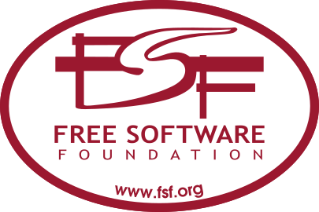
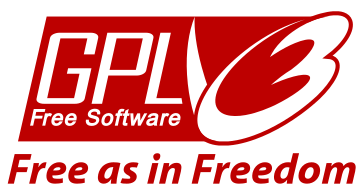
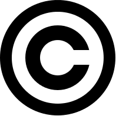
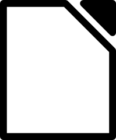
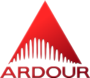
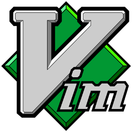

Software Livre
“conhecimento deve estar sempre disponível para permitir a evolução da humanidade”
Joenio Costa
– http://joenio.me
- Desenvolvedor de software (livre)
- Sócio/fundador da cooperativa Colivre
- Graduado em informática pela UCSal
- Mestrando na UFBA pelo PGCOMP
Software livre
Princípios e questões filosóficas
“Por software livre devemos entender aquele software que respeita a liberdade e senso de comunidade dos usuários”
– http://www.gnu.org/philosophy/free-sw.html
As quatro liberdades essenciais
- A liberdade de executar o programa para qualquer fim
- A liberdade de estudar como funciona e adaptá-lo
- A liberdade de redistribuir cópias para ajudar o próximo
- A liberdade de distribuir cópias modificadas
“Permitir a distribuição de cópias é permitir a solidariedade social” – Richard Stallman
“As quatro liberdades permitem que os usuários controlem o software e o que ele faz. Sem essas liberdades os usuários não controlam o software e passam a ser controlados por ele”
Software “não-livre” é anti-ético
Desenvolvedores de software não-livre ou software proprietário exercem controle sobre o software, e por meio dele, controlam os seus usuários, o que faz de tais softwares um instrumento de poder injusto
História software livre
- No início (década de 60) o software era livre por “natureza”
- Em 1970 a IBM começou a vender seus softwares separados do hardware
- Em 1980 quase todo software era “proprietário”, isto desencadeou um movimento…
Nascimento do Projeto GNU
| 1983, GNU |
"Uma maneira de trazer de volta o espírito cooperativo que prevalecia na comunidade de computação nos seus primórdios" -- http://gnu.org/gnu/gnu-history.html |
Nascimento da Free Software Foundation
|

1985, FSF |
"Fundação sem fins lucrativos criada para institucionalizar o Projeto GNU, bem como obter fundos para desenvolver e proteger o software livre" |
GNU GPL e Copyleft
Richard Stallman criou os mecanismos legais necessários para a existência do software livre
O que são licenças de software?
Definições expressas aos usuários de quais ações são autorizadas ou proibidas a respeito do uso do software
Software proprietário
vs
Software livre
- Licença de software proprietário restringe todos os direitos ao autor do software
- Licença de software livre dá todos os direitos aos usuários do software
- Freeware não é software livre
Licenças do Projeto GNU

- GNU GPL - General Public License
- GNU LGPL - Lesser General Public License
- GNU Affero GPL - General Public License
- GNU FDL - Free Documentation License
Só o GNU tem licenças livres?
- A licença do Perl
- A Licença do X11
- A licença modificada do BSD
- A licença da Zlib
– http://gnu.org/licenses/license-list.html
Copyright - all rights reserved

- O "direito de autor" ou copyright é a proteção de obras literárias e artísticas, se aplica também à software
- Não há qualquer formalidade para proteger a obra, o direito exclusivo nasce da criação
Copyleft - all rights reversed
Copyleft é uma forma de usar a legislação de proteção dos direitos autorais com o objetivo de retirar barreiras à utilização, difusão e modificação de uma obra criativa
– http://pt.wikipedia.org/wiki/Copyleft
– http://copyleft.org
Documentário: InProprietário
Trabalho de conclusão do curso de Comunicação Social e Jornalismo de 2008 dos alunos: Daniel Pereira Bianchi e Johnata Rodrigo de Souza
Histórico do software livre
| 1983: | Richard Stallman anuncia a criação do projeto GNU |
| 1984: | Stallman pede demissão para se dedicar ao GNU |
| 1985: | Stallman funda a Free Software Foundation (FSF) |
| 1987: | A FSF vende cópias do softwares GNU ($$$) |
| 1989: | A FSF cria o conceito de copyleft e a licença GPL |
| 1991: | Linus Torvalds anuncia a criação do kernel Linux |
| 1992: | A força aérea dos EUA investe no compilador GNAT |
| 1993: | A SuSE é fundada com negócios em GNU/Linux |
| 1994: | O Debian e o Red Hat GNU/Linux são lançados |
| ... | |
| 1995: | O Red Hat GNU/Linux 2.0 é lançado |
| 1996: | O projeto KDE é anunciado |
| 1997: | O projeto GNOME é anunciado |
| 1998: | O Netscape Communicator é liberado como SL |
| 1999: | Dell, HP e SGI anunciam suporte ao GNU/Linux |
| 2000: | Sun libera o StartOffice sob licença LGPL |
| 2001: | IBM anuncia investimento de US$ 1 bilhão no Linux |
| 2002: | Criação das licenças Creative Commons |
| 2003: | Motorola inicia vendas de celulares com Linux |
| ... | |
| 2004: | Primeira versão do Ubuntu e do Firefox |
| 2005: | Sun Microsystems disponibiliza o Open Solaris |
| 2006: | Sun libera máquina virtual Java sob licença GPL |
| 2007: | A FSF lança a versão definitiva da GPL versão 3 |
| 2008: | Nokia transforma o Symbian em software livre |
| 2009: | Oracle compra Sun por US$ 7,4 bilhões |
| 2010: | A Trolltech libera as bibliotecas Qt sob GPL |
| 2011: | Linus disponibiliza versão 2.6.38 do kernel Linux |
Desenvolvimento de software livre
“O movimento do software livre acabou criando novos paradigmas na produção de software.”
- Equipes distribuídas e com diversos tamanhos
- Trabalho voluntário VS trabalho remunerado
- Comunicação síncrona e assíncrona via Internet
- Repositório de código distribuído e descentralizado
- Valorização dos indivíduos sobre o processo
Ganhos sociais
- Transferencia de tecnologia
- Transparência do processo de produção
- Oportunidades de negócio para todos
- Oportunidade de aprendizado
- Maior colaboração entre pessoas
Exemplos de softwares livres
-

Linux
-
Debian
-

LibreOffice
-
Firefox
-

Inkscape
-
Gimp
-

Ardour
-
VLC
-
Noosfero
-

Vim
Eu gostei e quero colaborar
#comofaz
- Desenvolvimento
http://noosfero.org/Development - Listas de discussão
noosfero-dev@listas.softwarelivre.org
noosfero-br@listas.softwarelivre.org - Bate papo (IRC Freenode)
#noosfero
#noosfero-br
Mozilla
#comofaz
http://whatcanidoformozilla.org
Debian
#comofaz
http://wiki.debian.org/HelpDebian
É simples contribuir
Saber inglês é importante
Você pode desenvolver (Python, Java, Bash, Perl, Ruby, Lisp, Javascript, etc)
Você pode encontrar e relatar problemas ou bugs
Você pode traduzir
Você pode escrever documentação
Você pode criar temas, layouts, design, interface de usuário
Você pode ensinar outras pessoas
ou…
Você pode simplesmente utilizar software livre
Troque seu Windows por GNU/Linux
Escreva seus documentos usando LibreOffice
Navegue utilizando Mozilla Firefox
Use Gimp e Inkscape ao invés de Photoshop e Corel Draw
Obrigado!
joenio@colivre.coop.br
Dúvidas?